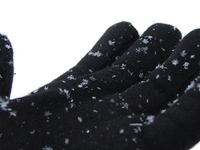

Next Photo
-
Vote
A Spoon Full Of Sky
The sky, trees, and house caught in a spoon. The backdrop to this photo is the new deck we built that summer. The red of the deck makes the blue and greens in the spoon pop. If you look very closely you can see me in parts of the handle (not very well though). The light plays in the bowl of the spoon just like water would.
A beautiful summer day created the lighting and contrast to make this picture so appealing. I had just finished a strawberry yogurt and licked my spoon clean when the idea for the photo hit me. I got my grandparent's point and shoot digital camera and took a couple shots. Luckily for me one turned out, and I love it.
The idea is quite thought provoking aswell, how would the world look through the eyes of a spoon? This photo marked my entrance into the world of arts. In the past I had been a linear math person. I am very thankful for the arts bring me much intrest.
I hope you like my photo!
More...
ID: 4
Title: A Spoon Full Of Sky
Description: The sky, trees, and house caught in a spoon. The backdrop to this photo is the new deck we built that summer. The red of the deck makes the blue and greens in the spoon pop. If you look very closely you can see me in parts of the handle (not very well though). The light plays in the bowl of the spoon just like water would.
A beautiful summer day created the lighting and contrast to make this picture so appealing. I had just finished a strawberry yogurt and licked my spoon clean when the idea for the photo hit me. I got my grandparent's point and shoot digital camera and took a couple shots. Luckily for me one turned out, and I love it.
The idea is quite thought provoking aswell, how would the world look through the eyes of a spoon? This photo marked my entrance into the world of arts. In the past I had been a linear math person. I am very thankful for the arts bring me much intrest.
I hope you like my photo!
Keywords: spoon sky reflection jones interesting
Hidden: n
Date added: 2012-09-17 02:56:54 UTC
Date taken: 2004-05-09 16:44:03 UTC
Camera: EASTMAN KODAK COMPANY.KODAK CX6330 ZOOM DIGITAL CAMERA.
Resolution: 2032x1524
Mode:
Shutter speed: 75/10
Flash: 16
Exposure time: 1/180
Iso:
Metering: 5
Aperture: 45/10
Focal length: 168/10
Artist: NathanielGuy Mahieu
Copyright: 2006 NathanielGuy Mahieu
Views: 27020
